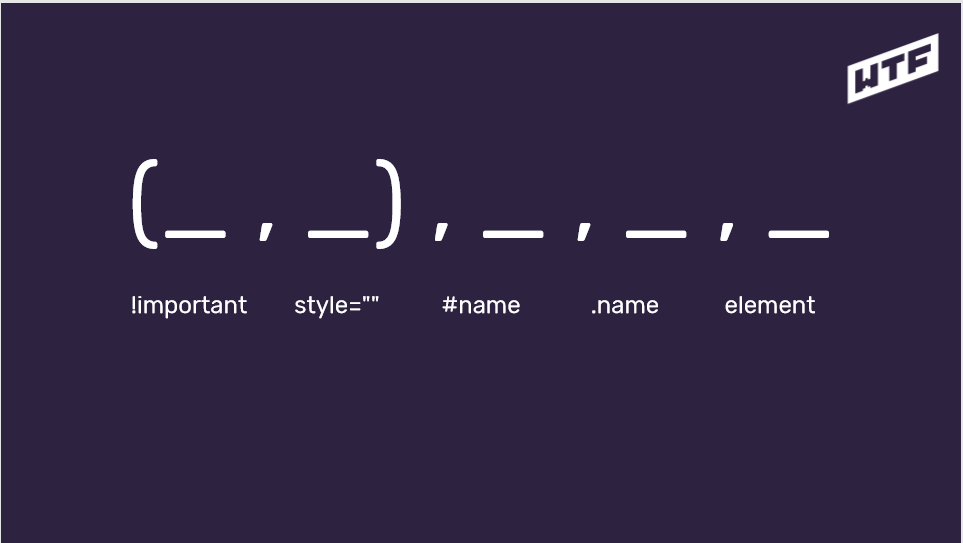

Lekcja 1: Co to jest CSS?
Pierwsze selektory i stylowanie strony
CSS = Cascading Style Sheets:
- odpowiada za prezentację
-
wpływa na wygląd elementów HTML na ekranie, wydrukach, itp.
- składnia CSS to reguły
Budowa reguły:
selektor {
właściwość: wartość;
}
Jak dołączyć plik css?
- Znacznik style wewnątrz head'a
-
Podlinkowanie pliku stylów do html
<link href="" rel="stylesheet" type="text/css" >
-
Inline style - o tym więcej w
lekcji nr 2
Lekcja 2: Klasy, identyfikatory i specyficzność
Style CSS można też dołączać w znacznikach HTML - choć jest to zła
praktyka.
<zniacznik style="color:yellow;">treść</znacznik>
Selektory wyboru:
- klasy - .nazwa-klasy
- identyfikatora - #nazwa-id
!important nadpisuje każdy styl, np: color:blue !important;
Specyficzność w CSS - klasyfikacja medalowa

Oto kilka przykładów:

Rekomendowane jest dodawanie klas do wszystkich elementów i unikanie
zagnieżdżeń.
Nazewnictwo klas:
-
używaj pojedynczych słów z j.angielskiego
-
nazywaj rzeczy zgodnie z ich funkcją na stronie
- startuj z małej litery
- nie zaczynaj od cyfr
-
jeśli musisz użyć dwóch słów użyj tzw. kebab-case
-
staraj się, żeby element miał jedną klasę (nie zwiększaj
sepcyficzności bez potrzeby)
Podsumowanie:
- html class="name" = css .name
- html id="name" = css #name
-
stylujemy po klasach (bez zagnieżdżeń)
-
nazwy klas po angielsku zgodnie z przeznaczeniem
-
tworzymy klasy nawet jeśli mamy jeden element danego typu
- specyficzność może dać popalić
-
nie używamy !important i stylów inline'owych